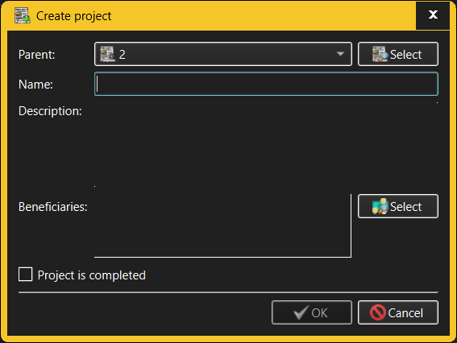

Create/Modify Project dialog
The same dialog is used for both creating new Projects and modifying existing
Projects.

The fields in the Create/Modify Project dialog allow the user to specify:
- Parent project - Projects are organized into a
hierarchy where a Project can have sub-projects which, in turn, can have
further sub-projects, and so on. The parent for a Project is first chosen
when that Project is created but can be changed later.
- Name - Projects are identified by short,
descriptive names (such as "Version 2 of the product", "Re-implementing the
legacy code base in e.g. Java" and so on) which must
be unique within a given workspace (if the Project has no parent) or
containing parent Project.
- Description - if the Project name is not
self-explanatory, its description may help to clarify its meaning. Multiple
lines of text may be entered here.
- Beneficiaries - a Project can be associated with one
(usually) or several Beneficiaries, who are the Project's stakeholders. This
field lists the Project's associated Beneficiaries and provides a Select
button to set up and modify that association as necessary.
- Completed - use this check box to mark the Project
as "completed". It can also be used to "un-complete" a Project, but this
action requires an Administrator capability, as it breaks the normal
workflow of Projects.
Only someone with Administrator or Manage Workloads capabilities is
allowed to create or modify Projects. However, anyone who can log into a
given workspace can see all Projects defined there.
See also: -